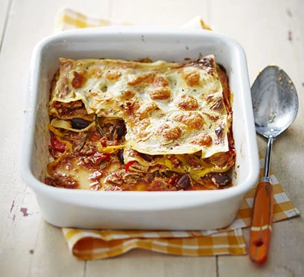

Tuna lasagna

Description
This cheap and cheerful lasagne is only 1.22 pounds per portion. Using tinned tuna keeps the cost down but is still full of nutrients, then topped with courgette and mozzarella is a perfect option for a heartwarming dinner
Ingredients
- 1 tbsp. olive oil
- 2 courgettes, trimmed and coarsely grated
- 1 onion, finely chopped
- 2 tsp. dried chilli flakes
- 400 g tin chopped tomatoes
- 145 g tin tuna in brine, drained and flaked
- 160 g full-fat cream cheese
- Finely grated zest of 1 lemon
- 8 dried lasagne sheets
- 50 g mozzarella, roughly torn
Steps
- Preheat oven to 200°C (180°C fan) mark 6. Heat 1/2tbsp oil in large, deep frying pan over medium hob heat and cook the courgette for 15min, stirring occasionally, until most of the moisture has evaporated. Tip into a heatproof bowl and return the pan to the heat.
- Add remaining oil to the pan and cook the onion for 10min, until softened. Add the dried herbs and chilli flakes and cook for 2min, until fragrant. Stir in the tomatoes and plenty of seasoning. Bring to the boil and simmer for 5min, until slightly reduced. Remove from the heat and stir in the tuna.
- Add the cream cheese, lemon zest and plenty of seasoning to the courgette bowl and mix well.
- Spoon 1/2 the tomato mixture into the base of a roughly 2 litre ovenproof serving dish and spread to level. Arrange 4 pasta sheets on top and spread over 1/2 the cream cheese mixture. Repeat layering once more. Sprinkle over the mozzarella.
- Cook in the oven for 25-30min, or until golden and bubbling. Serve with a green salad, if you like.